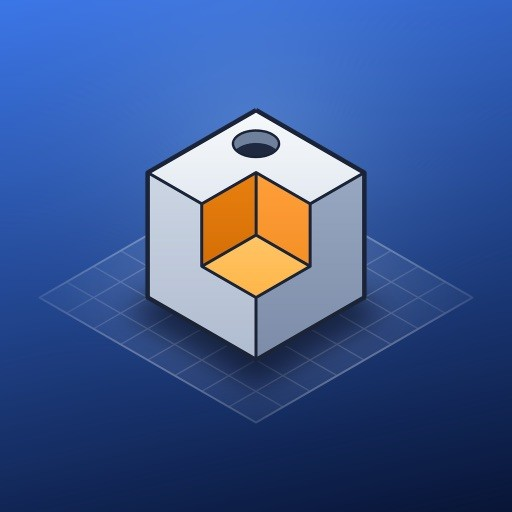
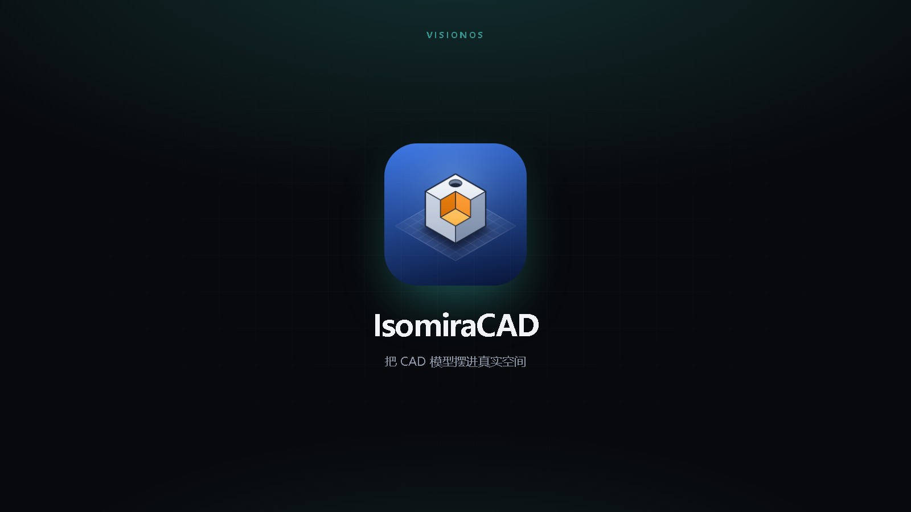

IsomiraCAD
把三维 CAD 模型从屏幕里拿出来，摆在真实空间
已发布visionOSv3.0
介绍
IsomiraCAD 是一款专为 Apple Vision Pro 打造的 CAD 查看器。它用自建的几何内核在本地解析 STEP、STL、OBJ、USDZ 文件，一比一还原，不需要联网，也不上传任何数据。 把模型放到桌面上放大到真实尺寸，绕着走、蹲下看，看清每一个倒角、孔位和装配间隙。爆炸视图按层级拉开装配体，剖切平面切一刀看内部腔体和壁厚，实体 / 线框 / 着色随时切换，视图立方一键回到标准正视、侧视、俯视。 面数、包围盒、单位这些信息即时可见；内核是自研的，不依赖任何第三方 CAD 授权库；大模型也能流畅旋转缩放。 没有账号、没有服务器、没有第三方统计 SDK，安装后完全离线运行——出差、进车间、在没网的现场都能随时看图。
功能
- 本地解析 STEP / STL / OBJ / USDZ，自研几何内核
- 一比一真实尺寸，绕着模型走、蹲下看细节
- 爆炸视图按层级拆开装配体，看清零件关系
- 剖切平面看内部腔体与壁厚
- 实体 / 线框 / 着色切换，视图立方一键回标准视角
- 完全离线，无账号、无服务器、无统计 SDK
截图
